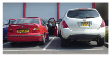
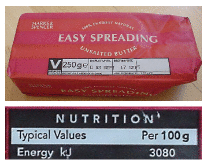
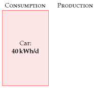
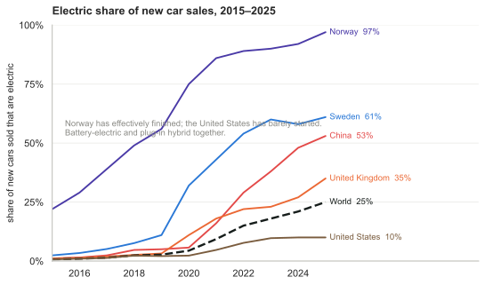
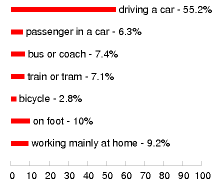
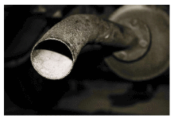

3 Cars

Figure 3.1. Cars. A red BMW dwarfed by a spaceship from the planet Dorkon.
For our first chapter on consumption, let’s study that icon of modern civilization: the car with a lone person in it.
How much power does a regular car-user consume? Once we know the conversion rates, it’s simple arithmetic:
\[ \begin{matrix} {\text{energy\ used\ per\ day} = \frac{\text{distance\ travelled\ per\ day}}{\text{distance\ per\ unit\ of\ fuel}}} \\ {\times \text{energy\ per\ unit\ of\ fuel}} \\ \end{matrix} \]
For the distance travelled per day, let’s use 50 km (30 miles). 1
For the distance per unit of fuel, also known as the economy of the car, let’s use 33 miles per UK gallon 2 (taken from an advertisement for a family car):
\[ \text{33\ miles\ per\ imperial\ gallon} \simeq \text{12\ km\ per\ litre.} \]
(The symbol ≃ means “is approximately equal to.”)

Figure 3.2. Want to know the energy in car fuel? Look at the label on a pack of butter or margarine. The calorific value is 3000 kJ per 100 g, or about 8 kWh per kg.
What about the energy per unit of fuel (also called the calorific value or energy density)? Instead of looking it up, it’s fun to estimate this sort of quantity by a bit of lateral thinking. Automobile fuels (whether diesel or petrol) are all hydrocarbons; and hydrocarbons can also be found on our breakfast table, with the calorific value conveniently written on the side: roughly 8 kWh per kg (figure 3.2). Since we’ve estimated the economy of the car in miles per unit volume of fuel, we need to express the calorific value as an energy per unit volume. To turn our fuel’s “8 kWh per kg” (an energy per unit mass) into an energy per unit volume, we need to know the density of the fuel. What’s the density of butter? Well, butter just floats on water, as do fuel-spills, so its density must be a little less than water’s, which is 1 kg per litre. If we guess a density of 0.8 kg per litre 3, we obtain a calorific value of:
\[ \text{8\ kWh\ per\ kg\ ×\ 0.8\ kg\ per\ litre} \simeq \text{7\ kWh\ per\ litre.} \]
Rather than willfully perpetuate an inaccurate estimate, let’s switch to the actual value, for petrol, of 10 kWh per litre. 4
\[ \begin{matrix} \\ {= \frac{\text{distance\ travelled\ per\ day}}{\text{distance\ per\ unit\ of\ fuel}} \times \text{energy\ per\ unit\ of\ fuel}} \\ \left. = \frac{\left. \text{50\ km}/\text{day} \right.}{\left. \text{12\ km}/\text{day} \right.} \times \text{10\ kWh}/\text{litre}\phantom{\text{AAA,,}} \right. \\ {\simeq \left. \text{40\ kWh}/\text{day}\phantom{\text{AAAAAAAAAAAA}} \right.} \\ \end{matrix} \]
Congratulations! We’ve made our first estimate of consumption. I’ve displayed this estimate in the left-hand stack in figure 3.3. The red box’s height represents 40 kWh per day per person.
This is the estimate for a typical car-driver driving a typical car today. Later chapters will discuss the average consumption of all the people in Britain, taking into account the fact that not everyone drives. We’ll also discuss in Part II what the consumption could be, with the help of other technologies such as electric cars.

Figure 3.3. Chapter 3’s conclusion: a typical car-driver uses about 40 kWh per day.
A note added in the 2026 revision. MacKay’s 40 kWh per day is the figure for a petrol car doing 33 miles per gallon, and as an account of the petrol car it has not dated: the physics of pushing a tonne of metal through air at 100 km/h is unchanged, and the average new car has not got dramatically more frugal. What has changed is that a large and rapidly growing share of new cars no longer burns petrol at all.
In chapter 20 MacKay works out that electric vehicles deliver transport at roughly 15 kWh per 100 km, five times better than the 33-mpg baseline used here. That estimate has held up remarkably well. The efficient electric saloons on sale today sit either side of it: the Hyundai Ioniq 6 at about 13.9 kWh/100 km in real-world testing, the Tesla Model 3 at about 14.4, and Volkswagen’s own WLTP figure for the ID.7 at 14.1 to 16.3. Heavier electric cars — the tall crossovers most buyers actually choose — run nearer 18 to 22.5 So MacKay’s 15 remains a fair number for a well-chosen electric car and an optimistic one for the average.
Applied to this chapter’s arithmetic, the same 50 km a day at 15 kWh/100 km costs 7.5 kWh per day rather than 40. The red box in figure 3.3 does not shrink because anybody drove less; it shrinks because the energy chain changed. That is the single largest reduction available in the consumption stack, and it is the reason Part II returns to it.

Figure 3.5. Added in this edition. How far this has actually got. Battery-electric and plug-in hybrid together, as a share of new cars sold.6
Sales share is not fleet share, and the difference is the whole of the problem. A car lasts fifteen years or so, so even a country selling nothing but electric cars replaces its fleet only slowly. In 2025 electric cars were 25% of new sales worldwide but about 5% of the cars actually on the road. Norway, which has been at high sales shares for a decade, has reached just over a third of its fleet. China, selling 55% electric, is at 13% of its stock. Europe sells 27% electric and its fleet is about 5% electric. The consumption stack responds to the fleet, not to the showroom, so the 40 kWh/d in this chapter is coming down far more slowly than the sales figures suggest — and the whole world’s electric cars displaced about 1.2 million barrels of oil a day in 2025, against total oil consumption of over 100 million.7
The spread is the interesting part. Norway is at 97% of new cars and has effectively finished the transition; Sweden 61%; China 53%, which on China’s volumes means it is buying more electric cars than the rest of the world combined; the United Kingdom 35%; the world as a whole 25%; and the United States 10%, which is roughly where Norway was in 2013. A single technology, available to all of them at similar prices, has been adopted at rates differing by a factor of ten. Whatever explains that, it is not physics, and this book’s method — which is to establish what is physically possible before arguing about what is likely — cannot settle it. It can only say that the 40 kWh box is optional, and that some countries have already exercised the option.
MacKay’s chapter is about cars, and cars are where the attention goes, but the rest of the road electrified at very different speeds and it is worth recording which.
Trucks moved suddenly. Electric trucks were about 2% of world truck sales in 2024 and 9% in 2025, the sales having doubled to over 400 000. Heavy freight trucks tripled, from 84 000 to 230 000. This is almost entirely one country: China took about 90% of global sales, and one in four trucks sold there is now electric, against 3% of truck sales in Europe and around 17 000 units in the United States. A truck is the hardest road vehicle to electrify — it is the case where MacKay’s battery-versus-diesel energy density argument bites hardest — and it is happening anyway, in the place with the cheapest batteries.
Buses were early and have plateaued. World sales were about 70 000 in 2025, up 12%, and 98% of them battery-electric rather than hybrid. China is 60% of that and has electrified over 60% of its own bus sales. Europe reached 12% of bus sales but over 55% for city buses specifically — which is the right comparison, because a city bus returns to a depot every night and never needs the range that defeats a lorry.
And the largest electrification in the world by vehicle count is not cars at all. Ten million electric two-wheelers were sold in 2025, 14% of that market globally and 55% in China, alongside 1.2 million electric three-wheelers, of which India took 800 000 — 70% of its own three-wheeler market. In terms of vehicles that have actually stopped burning petrol, the scooter has done more than the car, and it has done it in the countries this book’s British reader thinks of as the problem.8
Why does the car deliver 33 miles per gallon? Where’s that energy going? Could we manufacture cars that do 3300 miles per gallon? If we are interested in trying to reduce cars’ consumption, we need to understand the physics behind cars’ consumption. These questions are answered in the accompanying technical chapter A, which provides a cartoon theory of cars’ consumption. I encourage you to read the technical chapters if formulae like \(\frac{1}{2}mv^{2}\) don’t give you medical problems.
Chapter 3’s conclusion: a typical car-driver uses about 40 kWh per day. Next we need to get the sustainable-production stack going, so we have something to compare this estimate with.
Queries
What about the energy-cost of producing the car’s fuel?
Good point. When I estimate the energy consumed by a particular activity, I tend to choose a fairly tight “boundary” around the activity. This choice makes the estimation easier, but I agree that it’s a good idea to try to estimate the full energy impact of an activity. It’s been estimated that making each unit of petrol requires an input of 1.4 units of oil and other primary fuels (Treloar et al., 2004).
What about the energy-cost of manufacturing the car?
Yes, that cost fell outside the boundary of this calculation too. We’ll talk about car-making in Chapter 15.

Figure 3.4. How British people travel to work, according to the 2001 census.
Updated in the 2026 revision. The census has been taken twice more since MacKay drew this, and the second time it caught the country in a state that has not recurred.
Of workers in England and Wales, 57.5% drove to work in 2011 and a further 5.1% travelled as passengers. By the 2021 census those had fallen to 45.1% and 3.9%, while people working mainly from home went from 10.3% to 31.2%.9 That looks like a transformation, and it is largely an artefact: Census 2021 was taken in March 2021, under lockdown and furlough. It is a photograph of an emergency, not of a new normal, and it cannot be compared with MacKay’s 2001 figure as though the two measured the same thing.
There is no later British census to settle it with, because the census is decennial and the next is due in 2031. But two places do publish the figure every year, and both show that 2021 was a peak rather than a plateau.
| working from home | before | 2021 | latest |
|---|---|---|---|
| United States, ACS | 5.7% (2019) | 17.9% | 13.3% (2024) |
| EU, Eurostat, “usually” | 5.5% (2019) | 13.5% | 8.9% (2024) |
| England & Wales, census | 10.3% (2011) | 31.2% | no census until 2031 |
The American series has now fallen for three consecutive years from its 2021 high, and the European one likewise. Neither has gone back: the United States sits at more than twice its 2019 rate, the EU at about 1.6 times. American commuting shows the same shape from the other side — driving alone fell from 75.9% of workers in 2019 to 68.7% in 2022 and has since settled at 69.2%, about seven points below where it started, while public transport is recovering slowly at 3.7% against 5.0% before the pandemic.10
ONS has also tried to put a number on the distortion itself. Its Data Science Campus builds annual travel-to-work matrices for England and Wales with a gravity model, calibrated on the 2011 census and driven by the Department for Transport’s trip-end and travel-survey data, precisely to bridge the ten-year gaps. Its estimate for 2021 is that 76% of working adults would have travelled to a fixed workplace on pre-pandemic assumptions, against the 54% the census actually measured.11 That is a 22-percentage-point hole, and it is ONS’s own arithmetic rather than mine. It does not tell us where things settled, because the series stops at 2021 too — but it does say how far the photograph was from the trend it interrupted.
The three rows are not directly comparable in level, because each country asks a different question — the ACS asks for the principal means of getting to work, Eurostat asks whether someone usually works from home, and the census asks whether they mainly work at or from home. What they agree on is the shape, which is what matters here: a spike in 2021, a partial retreat, and a floor well above 2019. The British census caught the top of that spike and will not measure it again for five years.
The settled position is more modest and more interesting. On ONS’s 2025 figures, 28% of workers in Great Britain are hybrid — the highest since the series began, and still rising — against roughly 55% who travel to a single workplace as before. The average British worker is remote about 1.8 days a week, which is the second-highest rate in the world after Canada. Hybrid working is also sharply stratified: graduates are about ten times more likely to have it than those with no qualifications, and its incidence climbs with income.
What that does to this chapter’s 40 kWh/d is less than it first appears, and the arithmetic is worth doing because the intuition runs ahead of it. If 28% of workers commute on 3.2 days instead of 5, total commuting journeys fall by roughly a tenth. But the 50 km per day this chapter assumes is all car travel, not just commuting, and commuting is only about a third of car mileage. A tenth off a third is about 3% — call it 1 kWh/d off 40. Home working is a real reduction and a genuinely new feature of the system, but on its own it is a rounding error next to the factor of five available from changing what the car burns.
Notes and further reading
calorific values
petrol
10 kWh per litre
diesel
11 kWh per litre

For the distance travelled per day, let’s use 50 km. This corresponds to 18 000 km (11 000 miles) per year. Roughly half of the British population drive to work. The total amount of car travel in the UK is 686 billion passenger-km per year, which corresponds to an “average distance travelled by car per British person” of 30 km per day. Source: Department for Trans- port [5647rh]. As I said in chapter 2, I aim to estimate the consumption of a “typical moderately-affluent person” – the consumption that many people aspire to. Some people don’t drive much. In this chapter, I want to estimate the energy consumed by someone who chooses to drive, rather than depersonalize the answer by reporting the UK average, which mixes together the drivers and non-drivers. If I said “the average use of energy for car driving in the UK is 24 kWh/d per person,” I bet some people would misunderstand and say: “I’m a car driver so I guess I use 24 kWh/d.”↩︎
… let’s use 33 miles per UK gallon. In the European language, this is 8.6 litres per 100 km. 33 miles per gallon was the average for UK cars in 2005 [27jdc5]. Petrol cars have an average fuel consumption of 31 mpg; diesel cars, 39 mpg; new petrol cars (less than two years old), 32 mpg (Dept. for Transport, 2007). Honda, “the most fuel-efficient auto company in America,” records that its fleet of new cars sold in 2005 has an average top-level fuel economy of 35 miles per UK gallon [28abpm].↩︎
Let’s guess a density of 0.8 kg per litre. Petrol’s density is 0.737. Diesel’s is 0.820–0.950 [nmn4l].↩︎
… the actual value of 10 kWh per litre. ORNL [2hcgdh] provide the following calorific values: diesel: 10.7 kWh/l; jet fuel: 10.4 kWh/l; petrol: 9.7 kWh/l. When looking up calorific values, you’ll find “gross calorific value” and “net calorific value” listed (also known as “high heat value” and “low heat value”). These differ by only 6% for motor fuels, so it’s not crucial to distinguish them here, but let me explain anyway. The gross calorific value is the actual chemical energy released when the fuel is burned. One of the products of combustion is water, and in most engines and power stations, part of the energy goes into vaporizing this water. The net calorific value measures how much energy is left over assuming this energy of vaporization is discarded and wasted. When we ask “how much energy does my lifestyle consume?” the gross calorific value is the right quantity to use. The net calorific value, on the other hand, is of interest to a power station engineer, who needs to decide which fuel to burn in his power station. Throughout this book I’ve tried to use gross calorific values. A final note for party-pooping pedants who say “butter is not a hydrocarbon”: OK, butter is not a pure hydrocarbon; but it’s a good approximation to say that the main component of butter is long hydrocarbon chains, just like petrol. The proof of the pudding is, this approximation got us within 30% of the correct answer. Welcome to guerrilla physics.↩︎
Real-world consumption figures for the Ioniq 6 and Model 3 are from independent testing compiled by the EV press; the ID.7 range of 14.1–16.3 kWh/100 km combined is Volkswagen’s own WLTP figure. Manufacturer WLTP numbers and real-world tests do not always agree, and consumption varies by 30% or more with speed, temperature and terrain, so these are indicative rather than precise. The point that matters here is that they bracket MacKay’s 15. ### Trucks, buses and the two-wheelers nobody counts↩︎
Share of new cars sold that are electric, IEA via Our World in Data: https://ourworldindata.org/grapher/electric-car-sales-share. The series counts battery-electric and plug-in hybrid vehicles together, so it overstates the fully-electric share, most of all in the countries where plug-in hybrids are popular.↩︎
IEA, Global EV Outlook 2026. In 2025 over 20 million electric cars were sold, 25% of the new-car market, bringing the fleet to about 5% of the world’s cars. Stock shares: Norway over one third, China about 13% (some 44 million cars), Europe about 5%. Electric cars displaced roughly 1.2 million barrels of oil per day.↩︎
IEA, Global EV Outlook 2026, figures for 2025: electric trucks over 400 000 sold at 9% of truck sales, with heavy freight trucks at 230 000 against 84 000 in 2024; China about 90% of global electric truck sales; Europe near 17 000 at 3% of regional sales. Buses almost 70 000 sold, 98% battery-electric, Europe over 12 000 at 12% of bus sales and above 55% of city buses. Two-wheelers 10 million at 14% share; three-wheelers 1.2 million at over 25%, India 800 000. Light commercial vehicles over 430 000, up 45%.↩︎
Method of travel to work, Census 2011 and Census 2021, England and Wales, ONS. The ONS itself warns that Census 2021 was conducted during the pandemic and that the home-working figures are additionally affected by a definitional change. Hybrid and remote working shares are from ONS, “Who has access to hybrid working in Great Britain?”, covering 8 January to 30 March 2025; the 1.8 days a week figure is from the 2025 Global Survey of Working Arrangements. The 3% estimate in the text is my own arithmetic on those figures and assumes commuting is about a third of car mileage.↩︎
United States: American Community Survey, share of workers who worked from home — 5.7% (2019), 17.9% (2021), 15.2% (2022), 13.8% (2023), 13.3% (2024); drove alone 75.9% (2019), 68.7% (2022), 69.2% (2023 and 2024); public transport 5.0% (2019), 2.5% (2021), 3.7% (2024). European Union: Eurostat, employed persons usually working from home — about 5.5% (2019), 12.3% (2020), 13.5% (2021), 8.9% (2024); in 2023, 9% usually plus 13% occasionally. The definitions differ between the three sources and the levels should not be compared directly.↩︎
ONS Data Science Campus, “Estimation of travel to work matrices”: https://datasciencecampus.ons.gov.uk/estimation-of-travel-to-work-matrices/. A gravity model producing annual commuting-flow estimates for middle-layer super output areas in England and Wales, covering 2012 to 2021. These are experimental estimates and ONS states they should not be used for decision-making; they are quoted here only for the size of the gap between the modelled counterfactual and the measured census figure.↩︎